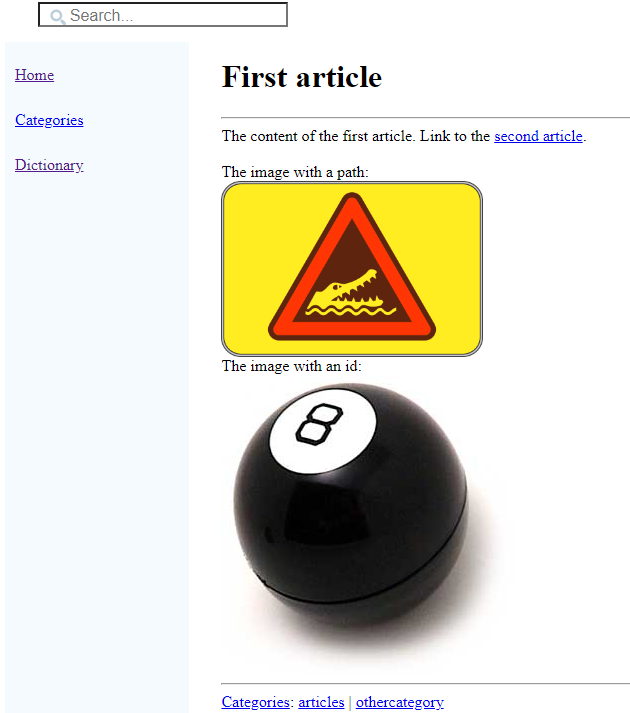
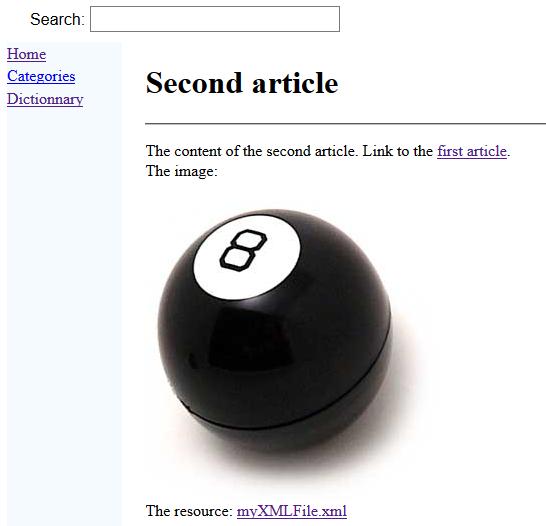

Home
Categories
Dictionary
Download
Project Details
Changes Log
What Links Here
How To
Syntax
FAQ
License
Second tutorial
1 Create an index article
2 Create our two articles
3 Add an image specified by its path to the first article
3.1 Use the image in the article
4 Add an image specified by its id to the two articles
4.1 Define the image
4.2 Use the image in our articles
5 Link to in internal resource file
6 Notes
7 See also
2 Create our two articles
3 Add an image specified by its path to the first article
3.1 Use the image in the article
4 Add an image specified by its id to the two articles
4.1 Define the image
4.2 Use the image in our articles
5 Link to in internal resource file
6 Notes
7 See also
This article is a tutorial which explains the concepts of imagas and resources.
You will:
We will create an index file exactly as for the first tutorial. The index file will contain the following content:
We will create our two articles exactly as for the first tutorial.
The first article will contain the following content:
In our tutorial, we will have the following file structure:
In our case, for the first article, we can define:
For example, let's define one image representing a bowling ball: . We need to:
. We need to:
In our case, the XML file defining our only image could have the following content:
In our case, for the first article, we can define:
It would not be possible to do this if your file was "in the same directory" as our articles, because the generator would try to parse the XML file as it does for articles and other XML files defiing the structure of our wiki.
To avoid this, we will create a sub-directory named "doc-files" anywhere in our wiki structure[1]
Now we will link to the "myXMLFile.xml" file in the second article:
Let's generate the wiki. Now the second article looks like that:
If you click on the resource link, you will see the content of the XML file.
You will:
- Create an index article.
- Create our first article
- Create a second article
- Add images
- Add resources
Create an index article
Main Article: first tutorial
We will create an index file exactly as for the first tutorial. The index file will contain the following content:
<index> The index for the tutorial wiki. A link to the <ref id="first article" />. </index>
Create our two articles
Main Article: first tutorial
We will create our two articles exactly as for the first tutorial.
The first article will contain the following content:
<article desc="first article"> The content of the first article. Link to the <ref id="second article" />. <cat id="articles" /> <cat id="othercategory" /> </article>The second article will contain the following content:
<article desc="second article"> The content of the second article. Link to the <ref id="first article" />. <cat id="articles" /> </article>
Add an image specified by its path to the first article
We will refer to an image by its relative path in the first article. In this case, the generator will look for the image file in a "doc-files" sub-directory. We will create a sub-directory named "doc-files" at the same level as our first article[1]
see doc-files
.In our tutorial, we will have the following file structure:
myWiki -- doc-files ---- crocodile.png -- article1.xml -- article2.xml -- index.xml
Use the image in the article
To use an image, you only need to refer to the image ID anywhere with the img tag.In our case, for the first article, we can define:
<article desc="first article"> The content of the first article. Link to the <ref id="second article" />. The image with a path: <img href="crocodile.png" width="20%" /> <cat id="articles" /> <cat id="othercategory" /> </article>
Add an image specified by its id to the two articles
We will define an image and use this same image in our two articles. It is simpler in this case to define the image in an XML file, and use the image id ratehr than its relative path.Define the image
Images are defined in one or several XML files with the images root element.For example, let's define one image representing a bowling ball:
- Put the image file anywhere want in our input directory
- Create an XML file which defines an ID for this image
In our case, the XML file defining our only image could have the following content:
<images> <image id="ball" url="ball.jpg" /> </images>In our tutorial, we will have the following file structure:
myWiki -- doc-files ---- crocodile.png -- images ---- images.xml ---- ball.jpg -- article1.xml -- article2.xml -- index.xml
Use the image in our articles
To use an image, you only need to refer to the image ID anywhere with the img tag.In our case, for the first article, we can define:
<article desc="first article"> The content of the first article. Link to the <ref id="second article" />. The image with a path: <img href="crocodile.png" /> The image with an id: <img id="ball" /> <cat id="articles" /> <cat id="othercategory" /> </article>We can also use the same image for the second article:
<article desc="second article"> The content of the second article. Link to the <ref id="first article" />. The image: <img id="ball" /> <cat id="articles" /> </article>Let's generate the wiki. Now the first article looks like that:

Link to in internal resource file
We would like to link to an XML file in our articles and show the content of the resource file in the browser when clicking on the link.It would not be possible to do this if your file was "in the same directory" as our articles, because the generator would try to parse the XML file as it does for articles and other XML files defiing the structure of our wiki.
To avoid this, we will create a sub-directory named "doc-files" anywhere in our wiki structure[1]
see doc-files
. For example:myWiki -- doc-files -- article1.xml -- article2.xml -- index.xmlWe can now add our "myXMLFile.xml" file in this new directory:
myWiki -- doc-files -- myXMLFile.xml -- article1.xml -- article2.xml -- index.xmlThe parser will not take into account directories named "doc-files" anywhere in the wiki structure[1]
see doc-files
.Now we will link to the "myXMLFile.xml" file in the second article:
<article desc="second article"> The content of the second article. Link to the <ref id="first article" />. The image: <img id="ball" /> The resource: <resource href="myXMLFile.xml" /> <cat id="articles" /> </article>The resource will be looked under the "doc-files" sub-directory[2]
You don't need to add the "doc-files" sub-directory in the path
.Let's generate the wiki. Now the second article looks like that:

If you click on the resource link, you will see the content of the XML file.
Notes
See also
- First tutorial: This article is a tutorial explaining how to create your first wiki
- Tutorials: This article presents a list of tutorials
×

Categories: Tutorials